ATACS User's Manual
Chris J. Myers, Kevin Jones, Scott Little, Nicholas Seegmiller, Robert Thacker, David Walter
1 Introduction
LEMA has been developed for the formal verification of analog and mixed-signal (AMS) circuits. LEMA includes the following tools:
2 Project Management
A project is a collection of models, analysis views, learn
views, and graphs. As shown below, iBioSim displays all project
files on the left, the open models, views, and graphs on the
right, and a log of all external commands on the bottom.
The menu bar is located on the top of the window in the Windows and
Linux versions. It is located on the top of the screen in the MacOS version.

2.1 Creating and Opening Projects
To create a new project, select New → Project from the File
menu as shown below. You will then be prompted to browse to a desired location
and to give a name to the project directory. After you do this,
click the new button and a new project directory will be created.
To open a project, select Open → Project from the File menu.
You will then be prompted to browse to a project directory to
open, and clicking open will open the project. You may also open
a project by selecting one of your five most recently opened
projects by selecting the project name shown in the File drop
down menu shown below.

2.2 Creating Models and Graphs
After you have created or opened a project, you can create a
new model or graph to add to the project. To create a new
Genetic Circuit Model (see Section ), select
New → Genetic Circuit Model from the
File menu as shown below. You will then be prompted to give a model id. At this
point, a GCM editor (see Section ) will open in a new
tab. To create a new SBML model, select New → SBML Model
from the File menu. You will then be prompted to give a model id.
At this point, an SBML editor (see Section ) will open
in a new tab. To create a new TSD graph, select New → TSD Graph
from the File menu. You will then be prompted to give a name to
the TSD graph. At this point, a TSD graph editor (see Section )
will open in a new tab. To create a new probability graph, select
New → Probability Graph from the File menu. You will then
be prompted to give a name to the probability graph. At this point, a
probability graph editor (see Section )
will open in a new tab. Once a model or graph is created, it can
be opened again later by right clicking on the object in the
project window and selecting "Edit", or alternatively
double-clicking on the object.

2.3 Importing Models
You can import into the current working project GCMs
or SBML Models created by other programs or stored in other projects.
To import a GCM, select Import → Genetic Circuit Model
from the File menu as shown below. You will then be able to browse to
find a model to import. After selecting the desired model, click the
import button
to bring the GCM into the project. Before bringing the model into the
project, it will be checked to see if it is a valid GCM file.
To import an SBML model, the procedure is the same except use the
Import → SBML Model option. Before bringing the model
into the project, it will be checked to see if it a valid SBML file.
The model will also be checked for consistency, and any errors or
warnings will be reported. These should be corrected before analysis
of the model is performed.
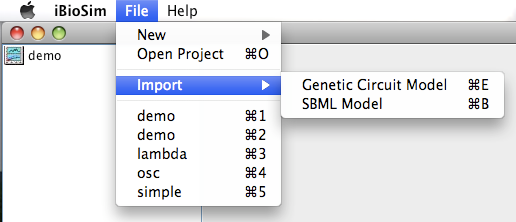
2.4 Editing Project Objects
All project objects can be modified by highlighting the object
and using a right mouse click to open a menu of options as shown
below. Using this menu, every type of object can be copied, renamed, or
deleted. For a GCM, the "View/Edit" option opens the
model in a GCM editor (see Section ). For an SBML model,
the "View/Edit" option opens the model in an SBML editor
(see Section ). For a TSD graph, the "View/Edit"
option opens the TSD graph in a TSD graph editor (see Section ).
For a probability graph, the "View/Edit" option opens
the probability graph in a probability graph editor
(see Section ).
For an analysis view, the "Open Analysis View" option opens the
analysis view (see Section ). For a learn view, the
"Open Learn View" option opens the learn view (see Section ).
2.5 Viewing Project Objects
A GCM can also be viewed using
GraphViz's
dotty program by right clicking on the model you want to view and
selecting the "View Genetic Circuit" option.
There are two additional ways to view an SBML model. You
can either select the "View Network" option or the
"View in Browser" option. The "View Network"
option converts the model to a GraphViz file and then will open that
file with GraphViz's dotty program. The "View in Browser" option
coverts the model to an xhtml file and opens that file with your
default xhtml browser.
2.6 Creating Tool Views
To perform analysis or learning, right click on a model and
select "Create Analysis View" (see Section )
to perform analysis or "Create Learn View" (see Section )
to perform learning. You will then be prompted to give a name to
your analysis or learn view. After a name is entered, a tab with
the newly created view will open. Once a view is created, it can
be opened again later by right clicking on an analysis directory
and selecting "Open Analysis/Learn View" or alternatively
double-clicking on the view.
| 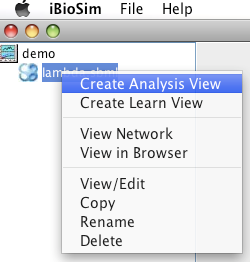 | | 
|
When you create an analysis view from a GCM, an SBML model is
automatically created for simulation and analysis. Within the
analysis view, you can edit the initial concentrations and
parameters. However, if you wish to be able to edit the
structure, you should first create an SBML model using Create
SBML Model option in the right click menu or the Save as SBML button in
the GCM Editor (see Section ). You can then open and
edit this model using an SBML editor (see Section ) and
create an analysis view from this edited model.
3
SBML Editor
The SBML editor as shown below allows the user to create or modify an SBML
model of a biochemical reaction network. An SBML model includes
compartments (see Section ),
species (see Section ),
reactions (see Section ),
parameters (see Section ),
function definitions (see Section ),
unit definitions (see Section ),
compartment types (see Section ),
species types (see Section ),
initial assignments (see Section ),
rules (see Section ),
constraints (see Section ), and
events (see Section ).
Each of these items can be added, removed, or edited.
To add a new item, click on the appropriate add button. You
will then be prompted to provide a unique id and some properties
for this new item (as described below). After you have filled out
all of the required fields, click add and the new item will be
added to the SBML model.
To remove an item from the model, select that item and click
the remove button. The item will then be removed from the model.
However, if you try to remove an item that is being used
(for example, a species that is used in a reaction), you will first have
to remove its use.
To edit an existing item, select that item from the list and
click the edit button. An editing window will open and you will
be able to change the properties of that item. When you are done
editing this item, click save to save the changes to the item.
After the model is complete, press the Save SBML button to store
the model. The Save and Check SBML button also saves the model, but
in this case it also checks the models consistency.
Note that many checks are done on the fly, so it should be difficult
to create models with consistency problems. However, if a user does
not wish to be warned about undeclared units or does not wish to have
units checked at all can set preferences to turn this off
(see Section ). The Save and Check SBML button
though will still present all the unit warnings and errors.
Finally, the Save As button can also be used to store the
model, but in this case, a new model ID will be requested and the
model will be saved using that ID.
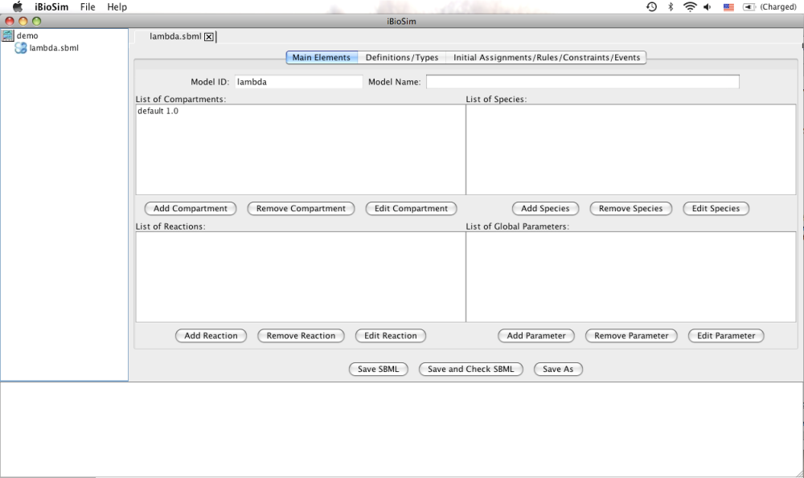
3.1
SBML Math Formulas
Math formulas appear in many SBML constructs. These formulas are
expressed as text strings using a simple C-like syntax.
SBML math formulas can include:
- Variables (compartment, species, parameter IDs, and reaction IDs)
- Real Numbers
- Built-in constants: exponentiale, pi, true, and false.
- Special variable time or t which returns the current simulation time.
- Mathematical operators including add (+), subtract (-), multiply
(*), divide (/), and power (x^y) which is equivalent to pow(x,y).
- A function defined in the list of function definitions.
- Logical functions: and, or, xor, not.
- Relational functions: eq, neq, geq, gt, leq, and lt.
- Unary functions: abs, ceiling, exp, factorial, floor, ln, log,
sqr, and sqrt.
- Trigonometric functions: cos, cosh, sin, sinh, tan, tanh, cot,
coth, csc, csch, sec, sech, arccos, arccosh, arcsin, arcsinh,
arctan, arctanh, arccot, arccoth, arccsc, arccsch, arcsec, and arcsech.
- The delay(expr1,expr2) function which returns the value of expr1 at a time
expr2 time units earlier (not currently supported by analysis).
- The piecewise(value1, case1, value2, case2, ..., otherwise)
function returns value1 if case1 is true, value2 if case2 is true,
etc. If no cases are true, it returns otherwise value.
iBioSim's simulators also support several random functions which
are added by default to any SBML file created with its SBML editor.
The following random functions, therefore, can also be used in SBML
math formula:
- Continuous random functions: uniform(a,b), normal(m,s), exponential(mu),
gamma(a,b), lognormal(z,s), chisq(nu), laplace(a), cauchy(a), and
rayleigh(s).
- Discrete random functions: poisson(mu), binomial(p,n), and bernoulli(p).
3.2
Main Elements
This Main Elements tab shown below is used to specify
compartments (see Section ),
species (see Section ),
reactions (see Section ), and
parameters (see Section ).
This tab also includes the Model ID which is fixed to be the same as
the filename as well as the Model Name which can be used to provide an
arbitrary string description of the model.
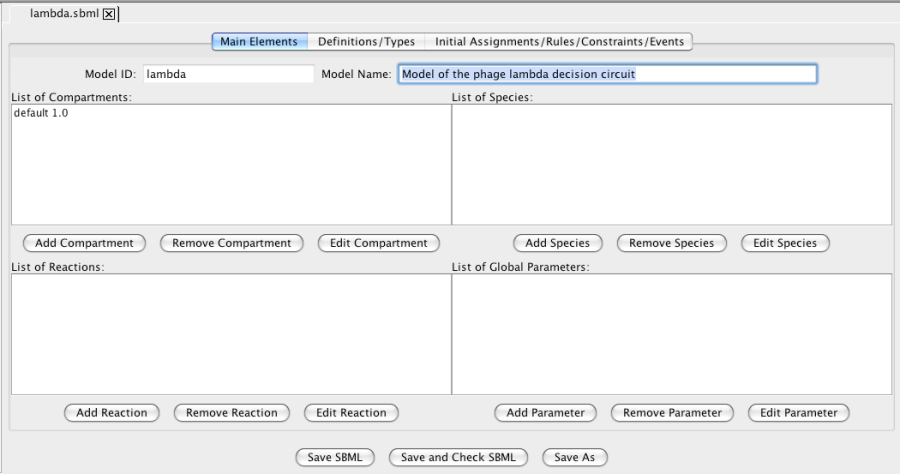
3.2.1
Compartments
Compartments are used to specify locations where species are
found. Every model must include at least one compartment. A new
model includes a compartment named "default" that
cannot be removed unless a new compartment is provided.
A compartment to which species have been assigned also cannot be removed.
As shown below, a compartment has the following fields:
- ID: a unique ID composed of only alphanumeric characters and
underscores.
- Name: an arbitrary string description (optional).
- Type: selected from the list of compartment types (default=none).
- Dimensions: number of spatial dimensions (default=3).
- Outside: the compartment that is outside this compartment
(default=none).
- Constant: Boolean indicating if the size is constant
(default=true).
- Size: initial size of the compartment (default=1.0).
- Units: the units for the size (default=none).
 Species are the molecules that appear as reactants, products, or modifiers
in the reactions in the biochemical reaction network.
As shown below, a species has the following fields:
Species are the molecules that appear as reactants, products, or modifiers
in the reactions in the biochemical reaction network.
As shown below, a species has the following fields:
- ID: a unique ID composed of only alphanumeric characters and
underscores.
- Name: an arbitrary string description (optional).
- Type: selected from the list of species types (default=none).
- Compartment: location of the species (default=default).
- Boundary Condition: Boolean indicating if the species
amount/concentration
cannot be changed by reactions (default=false).
- Constant: Boolean indicating if the species amount/concentration
is constant (default=false).
- Initial Amount/Concentration: initial value of the amount or
concentration of the species. Whether it is an amount or concentration
can also be selected (default=amount/0.0).
- Units: the units for the amount/concentration (default=none).
 Reactions are used to create or destroy molecular species in a
biochemical reaction network. As shown below, a
reaction is composed of the following:
Reactions are used to create or destroy molecular species in a
biochemical reaction network. As shown below, a
reaction is composed of the following:
- ID: a unique ID composed only of alphanumeric characters and
underscores.
- Name: an arbitrary string description (optional).
- Reversible: a Boolean indicating if the reaction is reversible
(default=false).
- Fast: a Boolean indicating if the reaction is fast (default=false).
- List of Reactants: species that are consumed by this reaction.
- List of Products: species that are produced by this reaction.
- List of Modifiers: species that are neither produced or consumed
by this reaction.
- List of Local Parameters: symbolic values that can be used in
the kinetic law or stoichiometry math formulas for this reaction.
- Kinetic law: an SBML math formula (see Section 3.1)
describing the rate or probability for this reaction.
When adding a reactant or product, the user must specify a species ID and
the stoichiometry (i.e., the number of molecules produced or consumed by the
reaction). The stoichiometry can also be expressed as a stoichiometry math
formula. Each parameter is composed of an ID, Name, Value, and Units.
The list of parameters begins with a default forward
reaction rate (kf) and reverse reaction rate (kr). These names
and their values should likely be edited. The kinetic law can
either be automatically generated using the Use Mass Action
button or manually entered. The
"Use Mass Action" button creates a rate law using the
law of mass action. It assumes that the first parameter in the
list is the forward reaction rate and the second parameter in the
list is the reverse reaction rate.
The "Clear" button clears the kinetic law editor.
The stoichiometry math and kinetic law formulas can only include
those species that appear as reactants, products, or modifiers.


3.2.4
Global Parameters
Global parameters are variables that can
be used in SBML math formulas (see Section 3.1).
As shown below, a parameter includes the following:
- ID: a unique ID composed only of alphanumeric characters and
underscores.
- Name: an arbitrary string description (optional).
- Value: initial value for the parameter.
- Units: the units for the parameter value (default=none).
- Constant: Boolean indicating if the parameter value
is constant (default=true).

3.3
Definitions/Types
The Definitions/Types tab shown below allows users to provide
function definitions (see Section ),
unit definitions (see Section ),
compartment types (see Section ), and
species types (see Section ).
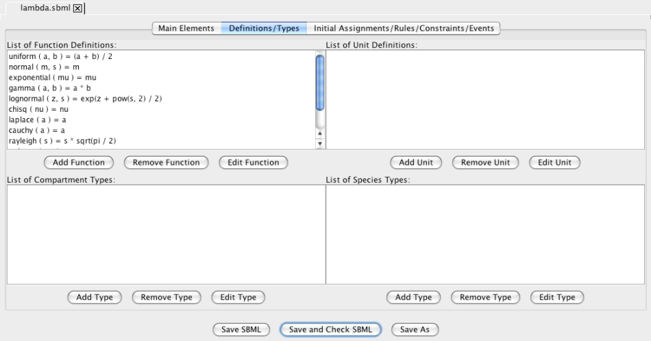
3.3.1
Function Definitions
Function definitions are used to create user defined functions that
can then be used in SBML math formulas (see Section 3.1).
As shown below, function definitions include an ID, an optional name field, a
comma-separated list of arguments, and its definition. The definition
is an SBML math formula though it is restricted to only use variable
names which are arguments to the function. While functions can
call other functions, they cannot be recursive (i.e., call themselves)
either directly or indirectly (i.e., through a cycle of function calls).
As mentioned earlier, several random functions supported by
iBioSim's simulators are added automatically.

3.3.2
Unit Definitions
Unit definitions are used to construct user-defined units which are
derived from the set of base units. As shown below, a
unit definition includes an ID,
an optional name, and a list of units that define it. There are
buttons to add, remove, and edit elements in the list of units.
Each unit is composed of a kind, exponent, scale, and multiplier. The kind
is selected from the list of base units in the table below:
| ampere | gram | katal | metre | second | watt |
| bacquerel | gray | kelvin | mole | siemens | weber |
| candela | henry | kilogram | newton | sievert | |
| coulomb | hertz | litre | ohm | steradian | |
| dimensionless | item | lumen | pascal | tesla | |
| farad | joule | lux | radian | volt | |
The exponent and scale are integers, and the multiplier is a real
number that specifies the relationship between the derived unit and the
base unit using the relation below:
| |
|
| (multiplier * 10scale * baseUnit)exponent |
| |
|

3.3.3
Compartment Types
Compartment types are used to relate multiple compartments. As shown
below, a compartment type includes an ID and an optional name field.
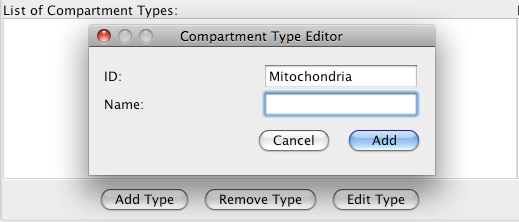
3.3.4
Species Types
Species types are used to relate multiple species. As shown below, a
species type includes an ID and an optional name field.
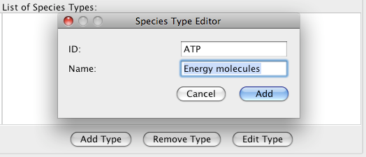
3.4
Initial Assignments/Rules/Constraints/Events
The Initial Assignments/Rules/Constraints/Events
tab as shown below allows users to provide initial assignments
(see Section ),
rules (see Section ),
constraints (see Section ), and
events (see Section ).
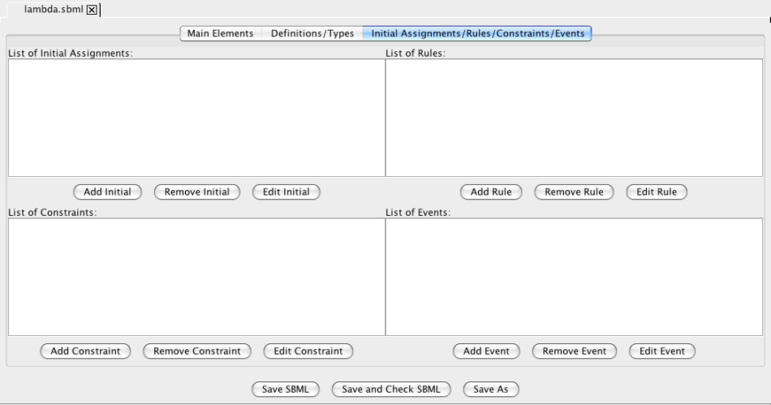
3.4.1
Initial Assignments
Initial assignments as shown below are used to provide an SBML math formula
(see Section 3.1) that is evaluated at time 0 to determine
the initial value of a compartment size, species amount or
concentration, or parameter. The value of this formula takes precedence over
the initial value specified in the object.
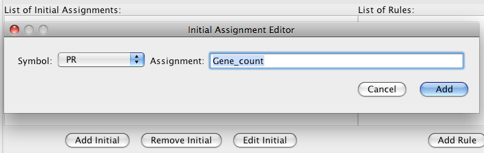
There are three types of rules: algebraic, assignment, and rate rules
which are in the following form:
| Algebraic | left-hand side is zero | 0 = f(W) |
| Assignment | left-hand side is a scalar | x = f(W) |
| Rate | left-hand side is a rate-of-change | [dx/dt] = f(W)
|
Algebraic rules specify relationships which must be maintained
(not currently supported by analysis). Assignment rules specify
the value of a compartment size, species amount or concentration, or
parameter in terms of an SBML math formula (see
Section 3.1). A variable cannot be determined by
both an assignment rule and initial assignment. Rate rules specify
the rate of change of a compartment size, species amount or
concentration, or parameter in terms of an SBML math formula
(see Section 3.1). A variable cannot be determined
by both an assignment rule and a rate rule. A species that is
a reactant or a product of any reaction cannot be updated by either
an assignment rule or rate rule.
When adding a rule, the user first selects the type of rule as shown
below. This
will automatically restrict the set of variables available for the
left-hand side to those that are valid. The user should then select
a variable, and enter an SBML math formula (see Section 3.1)
for the rule. When editing a rule, the user cannot modify the rule type.

3.4.3
Constraints
Constraints are used to specify properties that should cause
simulation to terminate. Our analysis method can provide histograms
that show the proportion of simulations that are terminated due to each
possible constraint. As shown below,
each constraint is composed of an ID which is
used to identify it in these histograms, a constraint given as an
SBML math formula (see Section 3.1), and a message
describing the constraint. A default id is automatically generated
when a new constraint is created.
 Events are used to specify discrete changes of compartment sizes,
species amounts or concentrations, and parameter values.
As shown below, each event
is composed of an ID, an optional name, a trigger formula, an optional
delay formula, and a list of event assignments. When adding a new
event, a default ID is provided. The behavior of an event is that during
each simulation cycle, the trigger formula is evaluated. If it was false
in the previous simulation cycle, and it is now evaluating to true,
the event is scheduled to occur at a time in the future specified by
the delay formula or immediately if no delay formula is provided.
It should be noted that since the trigger value must change from false
to true, no event is scheduled if the trigger evaluates to true at the
start of simulation. When an event occurs, it executes all the event
assignments. Each event assignment sets a compartment size, species
amount or concentration, or parameter value to the value specified by
the SBML math formula (see Section 3.1) provided with the event
assignment.
Events are used to specify discrete changes of compartment sizes,
species amounts or concentrations, and parameter values.
As shown below, each event
is composed of an ID, an optional name, a trigger formula, an optional
delay formula, and a list of event assignments. When adding a new
event, a default ID is provided. The behavior of an event is that during
each simulation cycle, the trigger formula is evaluated. If it was false
in the previous simulation cycle, and it is now evaluating to true,
the event is scheduled to occur at a time in the future specified by
the delay formula or immediately if no delay formula is provided.
It should be noted that since the trigger value must change from false
to true, no event is scheduled if the trigger evaluates to true at the
start of simulation. When an event occurs, it executes all the event
assignments. Each event assignment sets a compartment size, species
amount or concentration, or parameter value to the value specified by
the SBML math formula (see Section 3.1) provided with the event
assignment.

4
GCM Editor
The GCM editor shown below allows the user to create or modify a GCM
(see Section ). A GCM is a compact graphical representation
of a genetic circuit which can later be synthesized into an SBML model.
A GCM includes promoters (see Section ),
GCM species (see Section ),
influences (see Section ),
GCM parameters (see Section ), and an optional
SBML file. GCM species, influences,
and promoters can be added, removed, or edited. Parameters can only be edited.
An SBML file can also be selected to merge with the SBML generated from a GCM.
This allows either customization of the SBML model or the addition of SBML
constructs such as Initial Assignments, Rules, Constraints,
and Events (see Section 3.4).
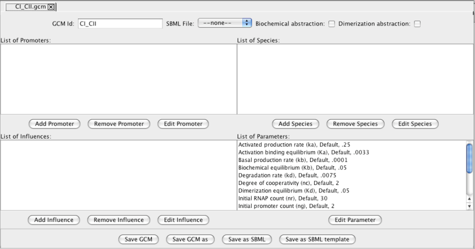
To add a new item to the GCM, click on the appropriate add button. You
will then be prompted to input information regarding the new
item. After you have filled out the required fields, click on ok
and the new item will be added into the GCM.
To remove an item from the GCM, select that item and click the
remove button. The item will then be removed from the GCM.
However, if you try to remove species or promoters that are used in
an influence, you will first have to remove the influence in
order to remove the species or promoter from the model.
To edit an existing item, select that item from the list and
click the edit button. An editing window will open and you will
be able to change the properties of that item. When you are done
editing this item, click save to save the changes to the item.
To merge an existing SBML file with the GCM output, click on
the SBML file and select the SBML file to use. This will merge
the contents of the selected SBML file with the SBML file that is
generated from the GCM. Finally, there are two abstractions that can
be selected to be performed when generating SBML, the biochemical and
dimerization abstractions.
Once a GCM is completed, the user can save the GCM or save the GCM
using a new name. The user can also save the GCM as SBML which creates
an SBML file of the same name as the GCM. Finally, the user can save
an SBML template which creates a blank SBML file with the same species
as the GCM. This is useful for creating an SBML file which will be
attached to the GCM, and includes rules, constraints, or events.
4.1
Promoters
Promoters are special species which represent the region of the DNA
from which transcription is initiated.
When adding or editing promoters, the user must supply a unique ID.
An optional name can also be provided which is an arbitrary string
description for the promoter.
If desired, the user can then modify the initial promoter count (ng),
the RNAP binding equilibrium (Ko),
the open complex production rate (ko),
the stoichiometry of production (i.e., the number of transcripts
per mRNA, np), the basal production rate (kb), or
the activated production rate (ka).

4.2
GCM Species
GCM species are the molecules (usually proteins) produced by genes.
When adding or editing a species, the user must provide a unique ID.
The user can also select the type of the species to be normal, constant,
or unconstrained.
A normal species will result in gene production and degradation reactions
being produced. A constant species will not generate any
production or degradation reactions. An unconstrained species will
produce a constant production and degradation reaction.
The user can also specify an initial species count (ns), a
Dimerization equilibrium (Kd), and a degradation rate (kd).
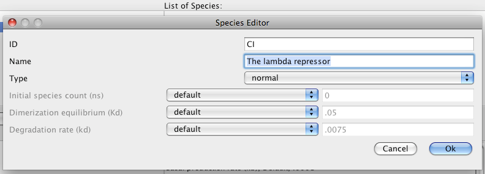
4.3
Influences
Influences describe the relationships between the GCM species.
When adding or editing an influence, the user must select an
input and output species, as well as the type of influence. If
the type is repression, then the input species represses the
production of the output species. If the type is activation, then
the input species activates the production of the output species.
The user can also specify whether the influence has a promoter.
If a promoter is selected, then this groups all influences using
the same promoter together.
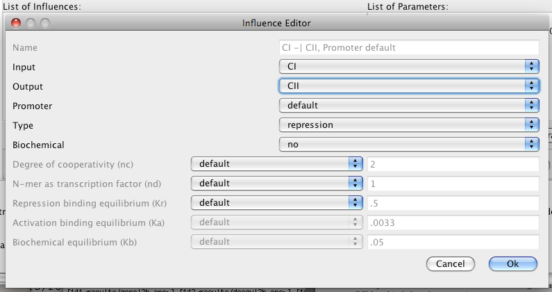
For example, if there are two influences:
A −| C, Promoter P1
B −| C, Promoter P2
this will create two reactions, where in the presence of A and
B, C is repressed. This would behave roughly like a NAND gate.
If, on the other hand, there are two influences:
A −| C, Promoter P1
B −| C, Promoter P1
this creates one reaction, where in the presence of A or
B, C is repressed. This would behave roughly like a NOR gate.
Users can also specify if the influence is a biochemical
influence. A biochemical influence requires all input species
belonging to the same promoter to be present in order to affect
transcription.
For example, if there are two biochemical influences:
A +| C, Promoter P1
B +| C, Promoter P1
this will create two reactions, A and B combines into a
complex, and the complex represses the production of C. This is a
NAND gate. If, on the other hand, if biochemical is not selected,
this behaves as a NOR gate.
The user can also set the value for degree of cooperativity (nc)
which is the number of binding sites for transcription factors.
The N-mer as transcription factor (nd) field determines how many
monomers of the input species
must be bound together in order to affect transcription. The user
can also set the value of the repression or activation binding equilibrium
(Kr and Ka). Finally, the user can specify the biochemical equilibrium
(Kb).
4.4
GCM Parameters
GCM parameters are a list of global parameters that are used
when generating the SBML model for the GCM. The parameter list
allows the user an easy way to change all the parameter values in
a convenient location. If a parameter in the GCM is set to
default, it will use the value found in the GCM parameter list.
These defaults can be modified in the user preferences
(see Section ). The GCM parameters are listed below:
| ID | Default Value | Units | Structure | Description |
|
| nr | 30 | molecule | model | Initial RNAP count |
| ns | 0 | molecule | species | Initial species count |
| Kd | 0.05 | [1/(molecule)] | species
| Dimerization equilibrium |
| kd | 0.0075 | [1/(sec)] | species
| Degradation rate |
| ng | 2 | molecule | promoter | Initial promoter count |
| np | 10 | molecule | promoter | Stoichiometry of
production |
| nc | 2 | molecule | promoter | Degree of cooperativity |
| Ko | 0.033 | [1/(molecule)] | promoter
| RNAP binding equilibrium |
| ko | 0.05 | [1/(sec)] | promoter
| Open complex production rate |
| kb | 0.0001 | [1/(sec)] | promoter
| Basal production rate |
| ka | 0.25 | [1/(sec)] | promoter
| Activated production rate |
| nd | 1 | molecule | influence | N-mer as transcription
factor |
| Kr | 0.5 | [1/(moleculenc)] | influence
| Repression binding equilibrium |
| Ka | 0.0033 | [1/(molecule(nc+1))] | influence
| Activation binding equilibrium |
| Kb | 0.05 | [1/(molecule)] | influence
| Biochemical equilibrium |

5
Analysis View
The analysis view is used to analyze biochemical reaction
network models. The analysis view as shown below includes tabs for
simulation options (see Section ),
abstraction options (see Section ),
a parameter editor (see Section ),
a TSD graph editor (see Section ), and a
probability graph editor (see Section ).

5.1
Simulation Options
iBioSim comes with a number of simulation methods, ranging
from continuous-deterministic simulation methods to
discrete-stochastic simulation methods. In order to perform
efficient temporal behavior analysis, various model abstraction
can also be automatically applied. These routines are implemented
within the reb2sac tool described in
Kuwahara's PhD Dissertation (UofUtah 2007)
.
The first set of radio buttons in this tab specifies the
levels of abstraction. "None" means to use no abstraction,
"Abstraction" means to perform reaction-based abstraction, and
"Logical Abstraction" means to perform both reaction-based and
logical abstractions.
The second set of radio buttons specify the type of analysis.
"ODE" is for continuous-deterministic simulation,
"Monte Carlo" is for discrete-stochastic simulation,
"Markov" performs temporal probability distribution
analysis on finite-state Markov chain models, "sbml"
outputs the model in SBML format, "Network" outputs the
structure of the model in the GraphViz format for display by dotty,
"Browser" outputs the model in xhtml format for display
in a web browswer.
The last set of radio buttons asks if you want to "Overwrite"
the simulation runs or if you want to "Append" more
simulation runs.
If you have not yet performed any simulation, this option is disabled.
The next field specifies the simulation method you want to use
based on the simulation type you specified. The methods available
are:
| Type | Method ID | Description |
|
| ODE | Euler | The forward Euler Method |
| ODE | gear1 | Gear Method M=1 |
| ODE | gear2 | Gear Method M=2 |
| ODE | rk4imp | Implicit 4th order Runge-Kutta at Gaussian points |
| ODE | rk8pd | Embedded Runge-Kutta Prince-Dormand (8,9) method |
| ODE | rkf45 | Embedded Runge-Kutta-Fehlberg (4, 5) method |
| Monte carlo | Gillespie | Gillespie's SSA direct method |
| Monte carlo | emc-sim | Use jump count as next reaction time |
| Monte carlo | bunker | Uses mean for next reaction time |
| Monte carlo | nmc | Uses normally distributed next reaction time
|
There are some properties that need to be set for simulation.
The table below specifies these:
| Field | Description |
|
| Time Limit | The simulation time limit |
| Print Interval | The print time interval for each simulation run |
| Maximum Time Step | The maximum time step allowed |
| | (also minimum time step for the Euler method) |
| Absolute Error | Used by the adaptive time step ODE methods |
| Random Seed | An integer number as a seed to generate random
numbers |
| Runs | The number of Monte Carlo simulation runs to
perform |
| Simulation ID | Creates a simulation directory with the ID name |
5.2
Abstraction Options
This tab as shown below allows the user to set the properties of rapid
equilibrium, QSSA, and operator site abstraction methods.
- Rapid Equilibrium Condition 1 specifies threshold T1 such that the rapid
equilibrium condition fails when T1 > E0 / (S0 + k−1/k1).
- Rapid Equilibrium Condition 2 specifies threshold T2 such that the rapid
equilibrium condition fails when T1 > k2 /k−1.
- The QSSA condition specifies threshold T used by
the QSSA abstraction method where T > E0 / (S0 + KM).
- The Max concentration threshold specifies the maximum
number of molecules that a species can have initially and still
be considered an operator site by the operator site reduction.
This tab also allows the user to select the interesting species.
Interesting species are the ones that are used in the
analysis, and hence are those which should never be abstracted away.
This tab shows all available species, and to make a species (or set of
species) interesting, highlight the species and press the Add Species
button. There is also a button to remove interesting species and to clear
all interesting species.
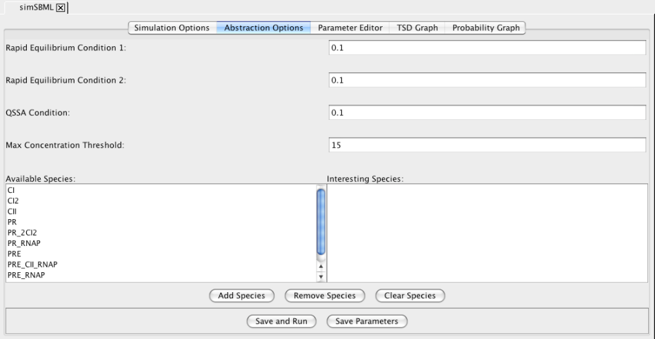
5.3
Parameter Editor
The parameter editor as shown below is similar in form to the SBML editor,
but it only allows initial concentrations and parameters to be
adjusted. Each of these parameters starts with the original value
specified in the SBML or GCM associated with
this analysis view. By changing the type to "Custom", a
new value can be entered. Changing the type back to "Original",
restores the original value. These values can also be swept by
selecting the "Sweep" type. In this case, you should
provide a start value, a stop value, a step amount, and a level
(1 or 2). When analyzing using sweep parameters, one analysis run
is produced for each value stepped through from start to stop.
The parameters at level 2 are changed first. When they have all
reached their stop value, the parameters at level 1 are stepped
once, and the parameters at level 2 are stepped through again.
This process repeats until all parameters at level 1 have stepped
to their stop value.

6
Learn View
The learn view is used to discover genetic circuit
connectivity from time series data. The learn view includes tabs
for a data manager (see Section ),
a learn tool (see Section ), and a
TSD graph editor (see Section ).
6.1
Data Manager
The data manager as shown below is used to both enter time series
experimental data as well as bring data
into the learn view. The Add button is used to create a new data
file. After pressing this button, enter the name of the new data
file, and then enter the data for this file using the data editor
to the right. The Remove button deletes all highlighted files.
Note that after highlighting one file, you can use the ctrl key
to highlight additional files or the shift key to highlight a
range of files. The Rename button is used to change the name of a
data file. The Copy button copies a data file. The Copy From View
button brings up a list of all analysis and learn views in the
current project, and data from the selected view will be copied
into this learn view. Finally, the Import button brings up a file
browser, and it allows you to import a data file from outside
this project. These files can be in time series data (TSD) format
(see Section ), comma separated value (CSV) format, or tab
delimited format (DAT).
The contents of the data file highlighted on the left appear in the
data editor on the right. Individual data entries can be modified,
new data points can be added using the Add Data Point button, data
points can be removed using the Remove Data Point button, and data
points can be copied using the Copy Data Point button. When you are
satisfied with all your changes, you should press the Save button
to record your changes.

6.2
Learn Tool
The learn tool shown below uses the GeneNet algorithm described in
Barker's PhD dissertation (UofUtah 2007)
. To use this learn tool, adjust
any options described below, if desired, then press the Save and
Learn button. The resulting genetic circuit is specified using
our Genetic Circuit Model (GCM) Format (see Section ) and is shown
graphically using GraphViz's Dotty tool. On this tab, there are also
buttons to save the parameters without learning, view the last learned
circuit, save the generated circuit into the project, and view the last run
log.
 Below are the basic learning options as shown above are as follows:
Below are the basic learning options as shown above are as follows:
- Minimum Number of Initial Vectors (Tn) (default=2):
Tn is a threshold value used in the CreateInfluenceVectorSet
algorithm and represents the minimum number of influence vectors
constructed in this algorithm.
- Maximum Influence Vector Size (Tj) (default=2):
Tj is a threshold value used in the CombineInfluenceVectors
algorithm to determine the maximal size of merged influence
vectors.
- Score for Empty Influence Vector (Ti) (default=0.5):
The score for an influence vector with no influences in it.
- Number of Bins (default=4):
The number of bins value specifies how many values the
encoded time series data can assume.
- Equal Data Per Bins / Equal Spacing of Bins:
This radio button selects whether the auto generated levels
should be determined by equaling dividing the data between the
bins or by equally dividing the range of the data.
- Use Auto Generated Levels / Use User Generated Levels:
This radio button allows the user to select whether they want
the levels separating the bins to be auto generated or the user
would like to provide them.
- When using user provided levels, the Suggest Levels
button will provide the levels that would have been auto
generated as a suggestion. These levels can then edited by the
user. The number of bins for each species can also be individually adjusted.
The advanced learning options shown below are as follows:
- Ratio for Activation (Ta) (default=1.15):
A probability ratio above this value results in a vote for an
influence vector that has a majority of activation influences.
- Ratio for Repression (Tr) (default=0.75):
A probability ratio above this value results in a vote for an
influence vector that has a majority of repression influences.
- Merge Influence Vectors Delta (Tm) (default=0.0):
Two influence vectors cannot be merged unless the difference
in their scores is less than this value.
- Relax Thresholds Delta (Tt) (default=0.025):
The values of Ta and Tr are modified by this amount when
these thresholds are relaxed.
- Debug Level (default=0):
This controls how much information is displayed by the
GeneNet algorithm when it runs.
- Successors / Predecessors / Both (default=Successors):
This radio button selects whether successor data point pairs,
predecessor data point pairs, or both are used.
- Basic FindBaseProb (default=unchecked):
When selected, the basic FindBaseProb function is used.
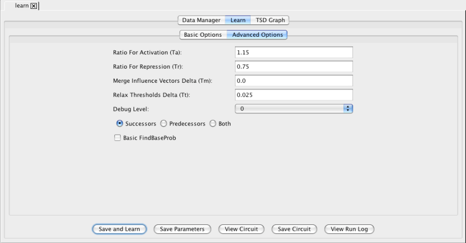
7
TSD Graph Editor
The TSD graph editor appears as a tab in both analysis and learn
views. TSD graphs can also be created at the top-level of the project
to allow you to integrate results from several analysis or learn
views. These graphs can be created using the New → TSD Graph
menu option. Once created, they can be viewed and edited by double
clicking on the graph in the project window. An example graph is
shown below.
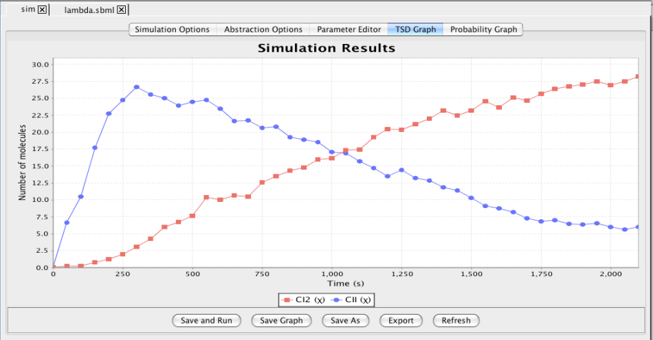
In the TSD graph editor shown below,
a graph is created by double clicking on the graph. You can then set
various parameters and select what values you would like to have
graphed. The parameters that you can select for a graph include:
- Title - The title of the graph.
- X-Axis Label - The label displayed for the x-axis.
- Y-Axis Label - The label displayed for the y-axis.
- X-Min - The starting value for the x-axis.
- X-Max - The ending value for the x-axis.
- X-Step - The increment for the x-axis.
- Y-Min - The starting value for the y-axis.
- Y-Max - The ending value for the y-axis.
- Y-Step - The increment for the y-Axis.
- Auto Resize Check Box -
Determines whether to automatically resize the graph for best fit.
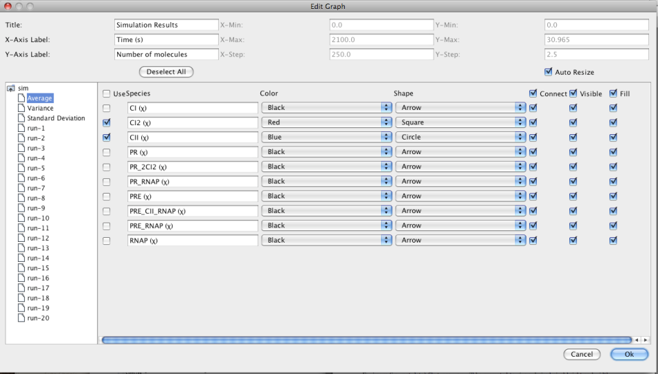
The data selection menu on the left displays all of the
available sets of data that can be graphed. In particular, one can
graph the average, variance, standard deviation, or results from
individual simulation runs. For a top-level graph, these
data sets will be organized hierarchically. Hierarchy is also
introduced when simulations in an analysis view are given
simulation IDs or after performing an analysis while sweeping parameter
values. After selecting a data set, one can select individual species to
graph and how they are to be displayed. In other words, for each
species, there are the following options:
- Use Check Box - Determines
whether or not this species is displayed on the graph. Checking or
unchecking the box at the top changes the state for all species in
the data set.
- Species Label - The name displayed in the legend.
- Drop Down Menu Of Colors - The color that is used for this species.
- Drop Down Menu Of Shapes - The shape that is used to mark the
data points.
- Connect Check Box -
Determines whether to connect the points with a line. Checking or
unchecking the box at the top changes the state for all species in
the data set.
- Visible Check Box - Determines
whether shapes are visible on the line. Checking or
unchecking the box at the top changes the state for all species in
the data set.
- Fill Check Box - Determines whether shapes are filled
on the line. Checking or
unchecking the box at the top changes the state for all species in
the data set.
Note that a check mark appears on a data set to indicate that some
species have been selected in that data set. Also, all species can
be deselected by pressing the Deselect All button.
The "Save Graph" button saves the settings for the graph to
a file, so when you re-open the graph, it will reload this data and display
in the same way as before. The "Save As" button prompts for a
filename and creates a new top-level graph with that name.
Finally, the "Export" button prompts for a filename and exports
the data to the given name. The extension provided for the filename
is used to determine how the graph is to be exported. The
supported file types are:
- csv - comma separated value data file.
- dat - column separated data file.
- eps - encapsulated postscript.
- jpg - JPEG (Joint Photographic Experts Group).
- pdf - portable document format.
- png - portable network graphics.
- svg - scalable vector graphics.
- tsd - time series data format (see Section ).
If no extension is given, then the file type is the one
specified in the file filter (default is pdf). For image (i.e.,
not data) file types, you will be prompted to give a desired
pixel height and width for the file before the file is exported.
8
Probability Graph Editor
Probability graphs are used to display histograms for reasons that
simulations terminated. This is used in conjunction with SBML constraints
to determine the likelihood of various conditions.
The probability graph editor appears as a tab in analysis
views. Probability graphs can also be created at the top-level of the project
to allow you to integrate results from several analysis views.
These graphs can be created using the New → Probability Graph
menu option. Once created, they can be viewed and edited by double
clicking on the graph in the project window. An example probability
graph is shown below.
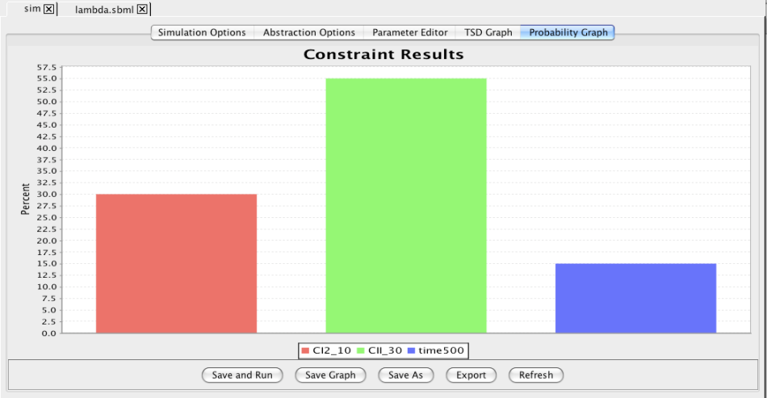
In the probability graph editor,
a graph is created by double clicking on the graph. You can then set
various parameters and select what values you would like to have
graphed. The parameters that you can select for a graph include:
- Title - The title of the graph.
- X-Axis Label - The label displayed for the x-axis.
- Y-Axis Label - The label displayed for the y-axis.
 The data selection menu on the left displays all of the
available sets of data that can be graphed.
For a top-level graph, these
data sets will be organized hierarchically. Hierarchy is also
introduced when simulations in an analysis view are given
simulation IDs or after performing an analysis while sweeping parameter
values. After selecting a data set, one can select individual constraints to
graph and how they are to be displayed. In other words, for each
constraint, there are the following options:
The data selection menu on the left displays all of the
available sets of data that can be graphed.
For a top-level graph, these
data sets will be organized hierarchically. Hierarchy is also
introduced when simulations in an analysis view are given
simulation IDs or after performing an analysis while sweeping parameter
values. After selecting a data set, one can select individual constraints to
graph and how they are to be displayed. In other words, for each
constraint, there are the following options:
- Use Check Box - Determines
whether or not this constraint is displayed on the graph. Checking or
unchecking the box at the top changes the state for all constraints in
the data set.
- Constraints Label - The name displayed in the legend.
- Drop Down Menu Of Colors - The color that is used for this constraint.
Note that a check mark appears on a data set to indicate that some
constraints have been selected in that data set. Also, all constraints can
be deselected by pressing the Deselect All button.
The "Save Graph" button save the settings for the graph to
a file, so when you re-open the graph, it will reload this data and display
in the same way as before. The "Save As" button prompts for a
filename and creates a new top-level graph with that name.
Finally, the "Export" button prompts for a filename and exports
the data to the given name. The extension provided for the filename
is used to determine how the graph is to be exported. The
supported file types are:
- eps - encapsulated postscript.
- jpg - JPEG (Joint Photographic Experts Group).
- pdf - portable document format.
- png - portable network graphics.
- svg - scalable vector graphics.
If no extension is given, then the file type is the one
specified in the file filter (default is pdf). For image (i.e.,
not data) file types, you will be prompted to give a desired
pixel height and width for the file before the file is exported.
9
Preferences
User preferences can be set by selecting the Preferences option
under the File menu on Linux and Windows or the iBioSim
menu on MacOS. As shown below, the user can decided whether they wish
to see warnings about undeclared units in SBML and whether they wish
to check units at all. The user can also change the GCM default
parameter values by clicking on the GCM Defaults button.
10
Genetic Circuit Model Format
Our genetic circuit model (gcm) format specifies a genetic
circuit using the same format used by the GraphViz graph drawing
tool. The vertices in the graph are the species in
the genetic circuit, and the edges in the graph represent the
activation and repression relationships between the species. An
activation relationship is shown with a blue (blue4) arrow (vee)
and a repression relationship is shown with a red (firebrick4)
tee. The label field in the species declaration is the name of
the species. The arrowhead field in the relationship declaration
represents the type of relationship between the species.
Repression is labeled with a tee and activation is labeled with a
vee. The label field in the relationship declaration represents
how many molecules are necessary to activate or repress the
production of the species. An example is shown below for a simple
genetic circuit in which the species CI represses CII while CII
activates CI production. The s1 − > s2 edge has a label field of
"2" which means two molecules of CI are required to form a dimer
to repress CII.
digraph G {
CI [shape=ellipse,color=black,label="CI"];
CII [shape=ellipse,color=black,label="CII"];
CII -> CI [color="blue4",arrowhead=vee];
CI -> CII [color="firebrick4",label="2",arrowhead=tee];
}
More advanced behavior can be modeled by using extra fields.
The promoter field groups a set of species together. The examples
below shows how the promoter field works. In the genetic circuit
model below, species A represses the production of species B and
C, independently. If there was exactly 1 molecule of species A,
it would only be able to repress production of species B or C,
but not both.
digraph G {
A [shape=ellipse,color=black,label="A"];
B [shape=ellipse,color=black,label="B"];
C [shape=ellipse,color=black,label="C"];
A -> B [color="blue4",arrowhead=tee];
A -> C [color="blue4",arrowhead=tee];
}
With the promoter field, one species A now represses the
promoter "P1", which produces both species B and C.
This means that one molecule of species A will repress the
production of both species B and C.
digraph G {
A [shape=ellipse,color=black,label="A"];
B [shape=ellipse,color=black,label="B"];
C [shape=ellipse,color=black,label="C"];
A -> B [color="blue4",arrowhead=tee,promoter="P1"];
A -> C [color="blue4",arrowhead=tee,promoter="P1"];
}
The promoter field can also be used to separate production
reactions. In the example below, both species A and B can repress
the production of species C. If either is present, then very
little C will be produced. This behavior is like a NOR gate.
digraph G {
A [shape=ellipse,color=black,label="A"];
B [shape=ellipse,color=black,label="B"];
C [shape=ellipse,color=black,label="C"];
A -> C [color="blue4",arrowhead=tee];
B -> C [color="blue4",arrowhead=tee];
}
However, if there needs to be two different sources of
production for species C, the promoter field can be used to
accomplish this. In the example below, A represses the production
of C by binding to the P1 promoter, and B represses the
production of C by binding to the P2 promoter. Both A and B need
to be present to fully repress the level of C. If either is at a
low level, then the level of C will be high. This behavior is
like a NAND gate.
digraph G {
A [shape=ellipse,color=black,label="A"];
B [shape=ellipse,color=black,label="B"];
C [shape=ellipse,color=black,label="C"];
A -> C [color="blue4",arrowhead=tee,promoter="P1"];
B -> C [color="blue4",arrowhead=tee,promoter="P2"];
}
The example below shows how to model an AND gate. The species
A and B have the constant flag set to true. This means that A and
B have no production and degradation reactions. The reactions
contain a promoter label "P1". This means that the
species C can be activated by both A and B. Combined with the
type flag of biochemical, this creates a biochemical reaction
where species A and B combine together to form a complex to
activate production of species C.
digraph G {
A [shape=ellipse,color=black,label="A",const=true];
B [shape=ellipse,color=black,label="B",const=true];
C [shape=ellipse,color=black,label="C"];
A -> C [color="blue4",arrowhead=vee,promoter="P1",type=biochemical];
B -> C [color="blue4",arrowhead=vee,promoter="P1",type=biochemical];
}
11
Time Series Data Format
The time series data (tsd) format is composed of a
parenthesized and comma-separated set of time points. Each time
point is composed of a parenthesized and comma-separated set of
data for that time point. This first time point is composed of a
set of strings that are the labels for the data entries. The
first entry in each time point is by convention the time for that
time point. Below is an example simulation of the species CI and
CII from 0 to 1000 seconds with time points separated by 100
seconds.
(("time","CI","CII"), (0,0,0), (100,0,19), (200,20,25), (300,19,18),
(400,17,20), (500,17,46),
(600,26,40), (700,43,43), (800,63,28), (900,72,34), (1000,72,28))
12
List of Hot Keys
Below is a list of the hot keys used in Windows and Linux with the
MacOS equilvalents in parantheses.
- Ctrl-X (Cmd-Q) - Exit or quit
- Ctrl-, (Cmd-,) - Preferences
- Ctrl-A - About
- Ctrl-M - Manual
- (Cmd-H) - Hide window
- (Alt-Cmd-H) - Hide other windows
- Ctrl-C - Copy
- Ctrl-R - Rename
- Ctrl-D - Delete
- Ctrl-P - New Project
- Ctrl-O - Open Project
- Ctrl-G - New Genetic Circuit Model
- Ctrl-S - New SBML Model
- Ctrl-V - New VHDL
- Ctrl-L - New LHPN
- Ctrl-N - Import Genetic Circuit Model or LHPN
- Ctrl-B - Import SBML
- Ctrl-H - Import VHDL
- Ctrl-T - TSD Graph
- Ctrl-Y - Probability Graph
13 Tutorial
A detailed
tutorial
is available in the docs directory that comes with the distribution.
14 Reporting Bugs and Feature Requests
In order to report a bug or to request a change or feature, please
send an email to:
atacs-bugs@vlsigroup.ece.utah.edu.
The subject line must begin with one of the following keywords or the
mail will be filtered by our spam filters:
- BUG - error or crash of the software
- CHANGE - something which can be improved
- FEATURE - something new
15 Credits
The iBioSim tool is being developed at the University of Utah
by
Chris Myers,
Nathan Barker,
Hiroyuki Kuwahara,
Curtis Madsen,
and
Nam Nguyen.
Nathan Barker is now with Southern Utah University, and Hiroyuki
Kuwahara is now with the Centre for Computational and System
Biology in Trento, Italy.
File translated from
TEX
by
TTH,
version 3.81.
On 10 Jan 2013, 14:10.